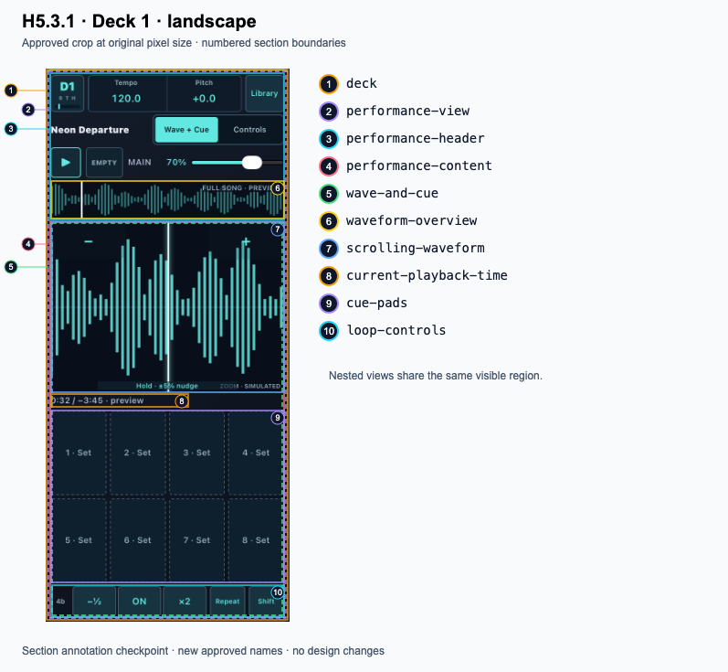
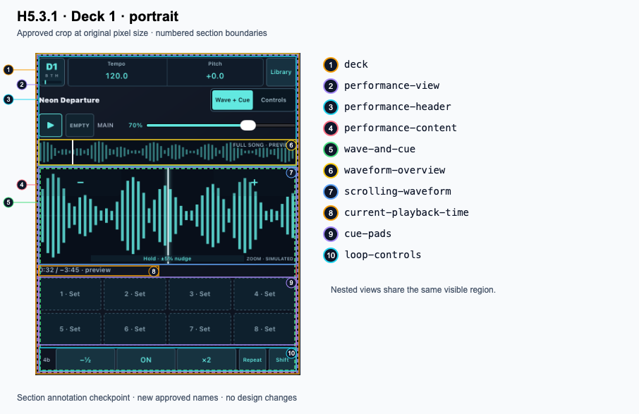
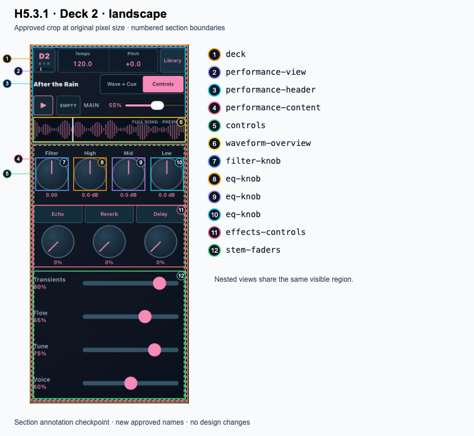
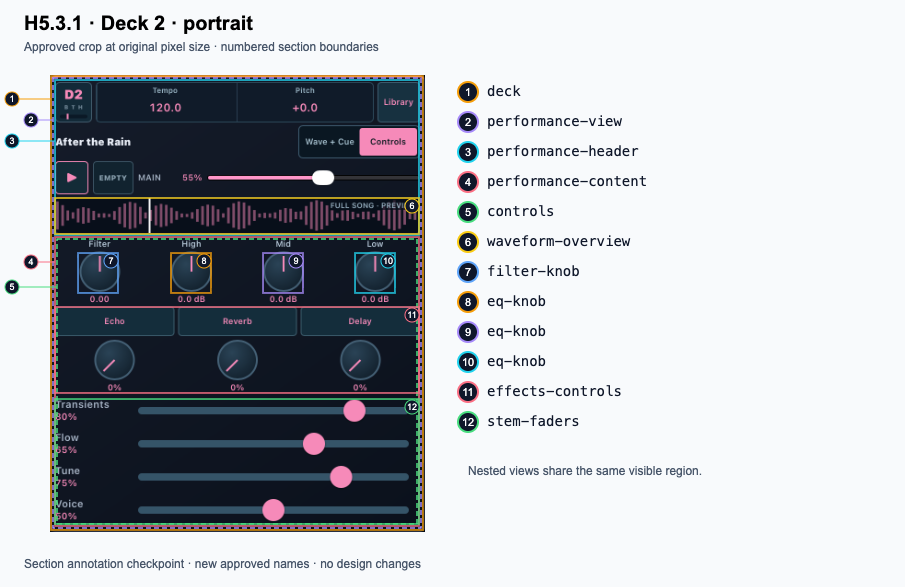
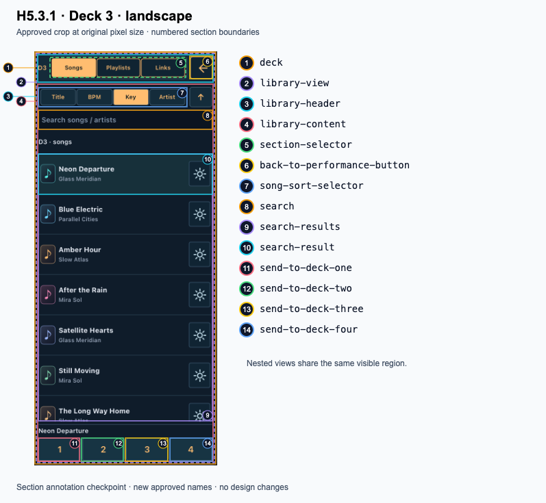
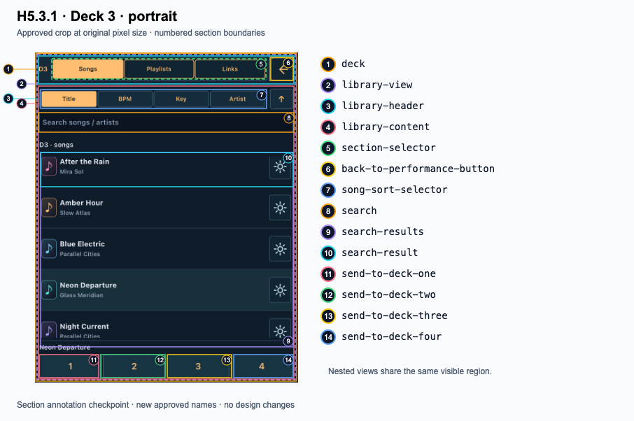

<div class="performance-view">
<div class="performance-header"></div>
<div class="performance-content">
<section class="performance-upper-section">
<div class="performance-upper-selector"></div>
<div class="wave-view">
<!-- scrolling-waveform; current-playback-time -->
</div>
<div class="stems-view">
<div class="stem-faders"></div>
</div>
</section>
<section class="performance-lower-section">
<div class="performance-lower-selector"></div>
<div class="cues-view">
<!-- cue-pads; loop-controls -->
</div>
<div class="controls">
<!-- filter-knob; eq-knob; effects-controls -->
</div>
</section>
</div>
</div>CURRENT LAYOUT — SUPERSEDES VERSION 1 HIERARCHY
Upper: Wave / Stems. Lower: Cues / Controls. All four decks default to Wave + Cues in the Performance workspace.
Each section shows one view at a time. Changing it never resets the other section, another deck, playback or the queue. Library round trips preserve both selections.
Upper Stems contains the four existing stem-faders inputs. Lower Controls contains only filter, EQ and effects. Musical controls remain disabled previews.
The persistent performance-header retains deck participation, tempo, pitch, Library, song title, Play/Pause, queue, main volume and waveform overview.
The following 20 pages and original Version 1 PDF are historical references. Their wave-and-cue and performance-selector hierarchy is retired. Their screenshots remain visual styling references, not the current section arrangement.
The authoritative current inventory is APPROVED-NAMING.md. The old PDF is intentionally preserved, not silently replaced.
Version 1
Reading the visual structure, shared deck components,
and their intended connections to application behavior.
Four underlying decks. One reusable interface structure.
Based on the approved H5.3.1 landscape and portrait references and the approved visual naming specification.
Prepared 22 November 2026
Working developer reference · Human approval governs implementation.
Start with a visible region, find its approved name, then follow its place in the hierarchy and its intended responsibilities.
APPROVED VISUAL REFERENCE
The six annotated screenshots are approved working references. Their numbered outlines identify visible regions; they do not expose actual browser DOM boundaries.
PROPOSED STRUCTURE
Code examples use the new approved names. They illustrate the intended code and do not claim that a migration has already happened.
EXISTING ARCHITECTURAL CONTEXT
The clean-deck prototype already separates visual, behavior, and audio modules. Page 16 explains the verified source connection.
Numbers restart for each image. Read a number together with its deck and orientation. The table following each image pair explains every numbered element.
Nested containers may cover the same visible area. Their slightly inset outlines make the nesting readable; exact CSS boxes must be checked during implementation.
Examples are structural illustrations. Repeated controls may be abbreviated. No new controls or musical rules are authorized by this guide.
3: overall hierarchy
4–6: Wave + Cue
7–9: Controls
10–12: Library
13–16: responsibilities and connections
17–19: complete naming reference
20: implementation notes
<div class="app">
<header class="mixer-header"></header>
<main class="mixer-decks">
<section class="deck">
<div class="performance-view">
<div class="performance-header"></div>
<div class="performance-content">
<div class="wave-and-cue"></div>
<div class="controls"></div>
</div>
</div>
<div class="library-view">
<div class="library-header"></div>
<div class="library-content"></div>
</div>
</section>
</main>
<footer class="mixer-footer"></footer>
</div>Repeat the same deck component four times inside mixer-decks. This example shows one instance only.
performance-view and library-view are alternatives within the same deck.
Inside performance-content, wave-and-cue and controls are alternatives. They are not additional decks.
The header remains part of the performance view when its content changes between Wave + Cue and Controls.

<!-- 1 deck; 2 performance-view -->
<section class="deck">
<div class="performance-view">
<!-- 3 -->
<div class="performance-header">
<!-- Other header controls -->
<div class="waveform-overview">
</div><!-- 6 -->
</div>
<div class="performance-content">
<!-- 4 -->
<div class="wave-and-cue">
<!-- 5 -->
<div class="scrolling-waveform">
</div><!-- 7 -->
<output
class="current-playback-time">
</output><!-- 8 -->
<div class="cue-pads">
</div><!-- 9 -->
<div class="loop-controls">
</div><!-- 10 -->
</div>
</div>
</div>
</section>The same hierarchy applies in both orientations. Header 3 includes overview 6. Content 4 contains the Wave + Cue alternative 5.
Names and numbers refer to this image. Repeated elements are abbreviated. Preserve the approved appearance.

<!-- 1 deck; 2 performance-view -->
<section class="deck">
<div class="performance-view">
<!-- 3 -->
<div class="performance-header">
<!-- Other header controls -->
<div class="waveform-overview">
</div><!-- 6 -->
</div>
<div class="performance-content">
<!-- 4 -->
<div class="wave-and-cue">
<!-- 5 -->
<div class="scrolling-waveform">
</div><!-- 7 -->
<output
class="current-playback-time">
</output><!-- 8 -->
<div class="cue-pads">
</div><!-- 9 -->
<div class="loop-controls">
</div><!-- 10 -->
</div>
</div>
</div>
</section>The same hierarchy applies in both orientations. Header 3 includes overview 6. Content 4 contains the Wave + Cue alternative 5.
Names and numbers refer to this image. Repeated elements are abbreviated. Preserve the approved appearance.
Applies to both Deck 1 images. All selectors below are proposed; JavaScript responsibilities describe intended connections.
| Reference / approved name | HTML placement and CSS selector | Intended JavaScript responsibility |
|---|---|---|
1 · deck | section inside mixer-decks; CSS .deck sets the card boundary. | Resolve this instance to its underlying deck; preserve its state across view changes. |
2 · performance-view | div inside deck; .performance-view lays out header and content. | Show the performance workspace for this deck. |
3 · performance-header | div inside the performance view; .performance-header arranges persistent controls. | Present the deck's current song, playback and control values. |
4 · performance-content | div following the header; .performance-content sizes switchable content. | Select the visible content without creating another deck. |
5 · wave-and-cue | Child of content; .wave-and-cue arranges waveform, time, pads and loop strip. | Present this alternative when selected; keep the same deck state. |
6 · waveform-overview | Child of header; .waveform-overview sizes the full-song preview. | Display overview and position from deck data; route approved overview interaction to deck behavior. |
7 · scrolling-waveform | Child of Wave + Cue; .scrolling-waveform defines the zoomed display. | Render waveform and playback position; pass approved gestures to behavior. |
8 · current-playback-time | Output within Wave + Cue; .current-playback-time styles the readout. | Display the deck's current time; the screenshot's preview values are not live-audio evidence. |
9 · cue-pads | Container within Wave + Cue; .cue-pads lays out eight pads. | Bind each pad by its approved data-cue value to the deck's cue behavior. |
10 · loop-controls | Container within Wave + Cue; .loop-controls arranges the visible loop strip. | Route the named loop actions to deck behavior and reflect accepted loop state. |
The individual playhead, cue-pad and loop-button names appear in the complete naming reference. This annotation pass groups the major visible sections.

<!-- 1 deck; 2 performance-view -->
<div class="performance-view">
<div class="performance-header">
<!-- 3; overview is 6 -->
<div class="waveform-overview">
</div>
</div>
<div class="performance-content">
<!-- 4 -->
<div class="controls"><!-- 5 -->
<div class="filter-knob"></div>
<!-- 7 -->
<div class="eq-knob"
data-frequency-band="high">
</div><!-- 8 -->
<div class="eq-knob"
data-frequency-band="mid">
</div><!-- 9 -->
<div class="eq-knob"
data-frequency-band="low">
</div><!-- 10 -->
<div class="effects-controls">
</div><!-- 11 -->
<div class="stem-faders">
</div><!-- 12 -->
</div>
</div>
</div>References 8, 9 and 10 are High, Mid and Low, in their visible order. All three share eq-knob; data-frequency-band distinguishes them.
Names and numbers refer to this image. Repeated elements are abbreviated. Preserve the approved appearance.

<!-- 1 deck; 2 performance-view -->
<div class="performance-view">
<div class="performance-header">
<!-- 3; overview is 6 -->
<div class="waveform-overview">
</div>
</div>
<div class="performance-content">
<!-- 4 -->
<div class="controls"><!-- 5 -->
<div class="filter-knob"></div>
<!-- 7 -->
<div class="eq-knob"
data-frequency-band="high">
</div><!-- 8 -->
<div class="eq-knob"
data-frequency-band="mid">
</div><!-- 9 -->
<div class="eq-knob"
data-frequency-band="low">
</div><!-- 10 -->
<div class="effects-controls">
</div><!-- 11 -->
<div class="stem-faders">
</div><!-- 12 -->
</div>
</div>
</div>References 8, 9 and 10 are High, Mid and Low, in their visible order. All three share eq-knob; data-frequency-band distinguishes them.
Names and numbers refer to this image. Repeated elements are abbreviated. Preserve the approved appearance.
Applies to both Deck 2 images. Knob div elements in the illustration mark visual regions, not a finalized accessible input implementation.
| Reference / approved name | HTML placement and CSS selector | Intended JavaScript responsibility |
|---|---|---|
1 · deck | section inside mixer-decks; CSS .deck sets the card boundary. | Resolve this instance to its underlying deck; preserve its state across view changes. |
2 · performance-view | div inside deck; .performance-view lays out header and content. | Show the performance workspace for this deck. |
3 · performance-header | div inside the performance view; .performance-header arranges persistent controls. | Present the deck's current song, playback and control values. |
4 · performance-content | div following the header; .performance-content sizes switchable content. | Select the visible content without creating another deck. |
5 · controls | Alternative child of content; .controls positions processing and stem controls. | Show Controls for the same deck; preserve its other view state. |
6 · waveform-overview | Inside header; .waveform-overview retains the shared preview. | Display this deck's overview and playback position. |
7 · filter-knob | Within Controls; .filter-knob styles the visible knob. | Translate input into the approved filter action; render the accepted value. |
8–10 · eq-knob | Within Controls; .eq-knob[data-frequency-band="high"], "mid", "low". | Use the band attribute to address High, Mid or Low for this deck; do not infer DSP ranges from the picture. |
11 · effects-controls | Within Controls; .effects-controls pairs each selector with the knob beneath it. | Keep each effect assignment connected to its corresponding amount control. |
12 · stem-faders | Within Controls; .stem-faders contains four range inputs identified by data-stem. | Route each stem adjustment to approved behavior and authorization rules; show accepted state. |
beat, bass, tune and voice. Attribute names do not authorize changing visible labels or redefining the underlying audio categories. Confirm the adapter mapping before implementation.
<!-- 1 deck; 2 library-view -->
<div class="library-view">
<div class="library-header">
<!-- 3 -->
<div class="section-selector">
</div><!-- 5 -->
<button
class="back-to-performance-button">
</button><!-- 6 -->
</div>
<div class="library-content">
<!-- 4 -->
<div class="song-sort-selector">
</div><!-- 7 -->
<input class="search"><!-- 8 -->
<div class="search-results">
<!-- 9 -->
<div class="search-result">
</div><!-- 10: one example -->
</div>
<button class="send-to-deck-one">
</button><!-- 11 -->
<button class="send-to-deck-two">
</button><!-- 12 -->
<button class="send-to-deck-three">
</button><!-- 13 -->
<button class="send-to-deck-four">
</button><!-- 14 -->
</div>
</div>Reference 10 marks one result row as an example of the repeated search-result structure. The four send buttons explicitly target Decks 1–4.
Names and numbers refer to this image. Repeated elements are abbreviated. Preserve the approved appearance.

<!-- 1 deck; 2 library-view -->
<div class="library-view">
<div class="library-header">
<!-- 3 -->
<div class="section-selector">
</div><!-- 5 -->
<button
class="back-to-performance-button">
</button><!-- 6 -->
</div>
<div class="library-content">
<!-- 4 -->
<div class="song-sort-selector">
</div><!-- 7 -->
<input class="search"><!-- 8 -->
<div class="search-results">
<!-- 9 -->
<div class="search-result">
</div><!-- 10: one example -->
</div>
<button class="send-to-deck-one">
</button><!-- 11 -->
<button class="send-to-deck-two">
</button><!-- 12 -->
<button class="send-to-deck-three">
</button><!-- 13 -->
<button class="send-to-deck-four">
</button><!-- 14 -->
</div>
</div>Reference 10 marks one result row as an example of the repeated search-result structure. The four send buttons explicitly target Decks 1–4.
Names and numbers refer to this image. Repeated elements are abbreviated. Preserve the approved appearance.
Applies to both Deck 3 images. These are intended responsibilities; exact library operations must follow approved product rules.
| Reference / approved name | HTML placement and CSS selector | Intended JavaScript responsibility |
|---|---|---|
1 · deck | Shared deck instance; .deck keeps its card boundary. | Retain the same underlying deck while its library is open. |
2 · library-view | Alternative to performance view; .library-view fills the workspace. | Show the shared library UI in this deck's workspace. |
3 · library-header | Child of library view; .library-header arranges selector and back button. | Present navigation context without changing playback. |
4 · library-content | Child of library view; .library-content sizes content and scrolling. | Coordinate search, selection and target actions using shared library data. |
5 · section-selector | Within header; .section-selector arranges Songs / Playlists / Links. | Choose the library section and display the current selection. |
6 · back-to-performance-button | Button within header; same class with a leading dot is its CSS selector. | Return this deck workspace to performance; preserve playback and deck state. |
7 · song-sort-selector | Within content; .song-sort-selector arranges sort choices. | Apply approved sorting and show the active choice. |
8 · search | Input within content; .search controls its appearance. | Apply the query to library search and update results. |
9 · search-results | Content container; .search-results defines the results viewport. | Render the current result collection and selection state. |
10 · search-result | Repeated result row; .search-result arranges title, artist and visible row content. | Connect row selection to the corresponding library item. |
11–14 · send-to-deck-one through send-to-deck-four | Four buttons within content; each approved class is its CSS selector. | Send the selected item to the explicitly named destination under approved loading/queue rules. |
No folder controls are visible here. The row-side icons, sort-direction arrow and selected-title strip remain in the image; no additional names or semantics are invented for them.
One visible control has three connected responsibilities. Its class identifies structure and styling; its behavior must resolve the correct deck.
| Layer | What it owns | Play / Pause example |
|---|---|---|
| HTML | The element, its semantic role and its place in the component hierarchy. | A button with class play-pause-button inside this deck's performance-header. |
| CSS | Appearance, dimensions, positioning, responsive layout and visible interaction states. | .performance-header .play-pause-button styles the shared control without deciding which track plays. |
| JavaScript | Input handling, deck resolution, behavior requests, state updates and rendering. | Handle activation, request Play or Pause for the containing deck, then render the resulting state. Audio failure must not appear as successful playback. |
<div class="performance-header">
<button class="play-pause-button"
type="button"
aria-label="Play">
▶
</button>
</div>Proposed markup fragment. The accessible label and visible state must follow the current deck state.
.performance-header .play-pause-button {
/* Approved appearance and geometry */
}
/* Intended flow, not an implemented API:
activation -> resolve containing deck
-> request deck behavior
-> reflect resulting state
*/No new function names are prescribed here. Keyboard, touch, mouse and future MIDI actions should reach the same behavior.
Class names describe what an element is. Deck identity determines whose state and audio it controls.
<main class="mixer-decks">
<section class="deck">
<!-- Deck 1 component instance -->
<button class="play-pause-button">
</button>
</section>
<section class="deck">
<!-- Deck 2 component instance -->
<button class="play-pause-button">
</button>
</section>
<!-- Deck 3 and Deck 4 repeat
the same component structure. -->
</main>This excerpt omits intermediate containers for readability. It does not propose placing Play outside the performance header.
Rendering can bind actions to its deck instance, or event handling can resolve the containing deck. The implementation mechanism is not selected by this guide.
Do not introduce separate visual classes such as a Deck 1 Play class and a Deck 2 Play class. All four use play-pause-button.
Preserve the existing authoritative appState.decks and appState.participation structures unless an alternative is explicitly approved.
The library's approved send-to-deck-one through send-to-deck-four names intentionally specify destinations. They can be shown in a library opened from any deck.
Landscape and portrait are two arrangements of the same components, controls and four persistent decks.
Four deck workspaces appear across the screen. Deck 1 shows Wave + Cue, Deck 2 shows Controls, and Deck 3 shows Library.
The narrower cards and taller available workspace affect waveform height, cue-pad dimensions and control spacing.
The workspaces form a two-by-two arrangement. Wider, shorter cards change the proportions of the same sections.
Deck 3 remains the Library view of the same underlying Deck 3; it does not become a different component system.
/* Proposed selector relationships.
Exact breakpoint values are not defined. */
.mixer-decks { /* shared deck layout */ }
.deck { /* shared card */ }
.performance-header { /* shared header */ }
.wave-and-cue { /* same view */ }
.controls { /* same view */ }
.library-view { /* same workspace */ }CSS responds to available screen space. Do not create separate portrait and landscape class vocabularies or duplicate musical behavior.
No numeric breakpoints, fixed screen requirements or new layout rules are approved by this guide.
INTENDED CONNECTION The proposed .play-pause-button belongs to the containing deck. Its event handling requests deck behavior; the audio outcome and resulting state determine the interface update.
| Responsibility | Existing module | Observed connection |
|---|---|---|
| Visual / event handling | app/visual/mixer/deck.js | Creates a button and attaches a click listener. Calls existing pauseDeck or awaits playDeck, catches playback errors, then calls updateDeckDesign. |
| Deck behavior | app/behavior/mixer/deck.js | Existing playDeck returns for an empty deck; otherwise awaits startAudio before setting isPlaying. Existing pauseDeck calls pauseAudio and clears that state. |
| Audio | app/audio/deck-audio.js | Existing buildAudio creates a browser Audio player. startAudio awaits its play(); pauseAudio calls its pause(). |
development/clean-deck.html. It is architectural context, not the H5.3.1 visual implementation or proof of a completed naming migration. The current root application uses its separate integration/native Web Audio path. No audio behavior was tested while creating this document.Names below are the approved HTML classes; prefix each with a dot for its CSS class selector. This is the complete name inventory, with intended responsibilities. The authoritative wording remains in APPROVED-NAMING.md.
| Approved name / selector | Purpose / intended connection |
|---|---|
app | Entire application. |
mixer-header | Global mixer header. |
mixer-decks | Container holding the four decks. |
mixer-footer | Global mixer footer. |
deck | Individual deck container; resolve its underlying deck identity. |
performance-view | Performance alternative within a deck. |
library-view | Library alternative within the same deck. |
performance-header | Persistent portion of the performance interface. |
performance-content | Switchable content area. |
wave-and-cue | Wave + Cue alternative within performance-content. |
controls | Controls alternative within performance-content. |
library-header | Header within library-view. |
library-content | Content within library-view. |
| Approved name / selector | Purpose / intended connection |
|---|---|
deck-participation-button | Open the deck's participation interface; reflect authoritative participation state. |
tempo-slider | Present tempo input; route changes to approved deck tempo behavior. |
pitch-slider | Present pitch input; route changes to approved deck pitch behavior. |
library-button | Open this deck's library-view. |
song-title | Display the current song title in the performance header. |
performance-selector | Choose wave-and-cue or controls. |
play-pause-button | Request Play or Pause for the containing deck. |
queue-button | Present queue state and route approved queue actions. |
main-volume-fader | Request main level changes; reflect accepted deck volume. |
waveform-overview | Present full-song waveform and playback position. |
CSS owns visual presentation for these selectors. JavaScript owns interaction and state. Musical calculations and audio processing remain outside visual styling.
| Approved name / selector | Purpose / intended connection |
|---|---|
scrolling-waveform | Zoomed waveform display in wave-and-cue. |
current-playback-time | Readout of current deck playback time. |
playhead | Playback-position indicator; derive its display from deck timing. |
cue-pads | Container for the eight cue-pad buttons. |
cue-pad | Eight individual buttons, identified using data-cue="1" through data-cue="8". |
loop-controls | Container for the visible loop controls. |
halve-loop-button | Request the approved halve-loop action. |
loop-toggle-button | Request the approved loop toggle action. |
double-loop-button | Request the approved double-loop action. |
<button class="cue-pad"
data-cue="1"></button>
.cue-pad[data-cue="1"]Repeat the cue-pad structure through 8. Repeat and Shift remain visible in the approved reference, but this naming specification supplies no new names or behavior definitions for them.
| Approved name / selector | Purpose / intended connection |
|---|---|
filter-knob | Filter control; the visual region does not prescribe its accessible input implementation. |
eq-knob | Shared class for Low, Mid and High, distinguished by data-frequency-band="low", "mid", or "high". |
effects-controls | Container for paired effect selectors and effect knobs. |
effect-selector | Select the effect corresponding to the knob directly beneath it. |
effect-knob | Adjust the corresponding selected effect under approved behavior. |
stem-faders | Container holding four range inputs, distinguished by data-stem="beat", "bass", "tune", or "voice". |
.eq-knob[data-frequency-band="high"] .stem-faders input[data-stem="beat"] <div class="stem-faders"> <input type="range" data-stem="beat"> <input type="range" data-stem="bass"> <input type="range" data-stem="tune"> <input type="range" data-stem="voice"> </div>
Each effect selector corresponds to the effect knob directly beneath it. No amount ranges, DSP formulas, or effect algorithms are introduced here.
| Approved name / selector | Purpose / intended connection |
|---|---|
section-selector | Songs / Playlists / Links. |
back-to-performance-button | Return the owning deck workspace to its performance view. |
song-sort-selector | Present and change approved song sorting. |
search | Search input; update library results. |
search-results | Container holding the current results. |
search-result | Repeated result item. |
song-title | Display a song title; the same name is reused in the performance header. |
artist | Display the result item's artist. |
playlist-title | Display a playlist title when that content is shown. |
send-to-deck-one | Send the selection to Deck 1 under approved loading rules. |
send-to-deck-two | Send the selection to Deck 2 under approved loading rules. |
send-to-deck-three | Send the selection to Deck 3 under approved loading rules. |
send-to-deck-four | Send the selection to Deck 4 under approved loading rules. |
| Approved name / selector | Purpose / intended connection |
|---|---|
folder-contents | Present a folder's contents. |
folder-back-button | Navigate back from the current folder. |
folder-title | Display the current folder title. |
folder-item | Represent an item in the folder structure. |
folder-expand-button | Toggles expansion and collapse. |
create-folder-button | Invoke approved folder creation behavior. |
rename-folder | Provisional action name; not a finalized HTML/CSS class assignment. |
Folder controls and playlist-title are not visible in the six approved deck references. They are included because the approved naming inventory includes them, not because this guide adds them to the screenshot.
The specification does not establish the complete nested folder/playlist hierarchy or resolve every operation. Preserve this uncertainty until a focused implementation task is approved.
For rename-folder, retain the approved spelling as a provisional action name. The guide does not convert it into a mandatory selector.
Visual code owns presentation. Behavior code owns decisions and state transitions. Audio code owns playback and signal processing. A visual naming migration does not authorize an audio-engine change.
Do not infer control ranges, playback semantics or matching formulas from screenshots. Consult approved product rules and subsystem specifications.
docs/visual-verification/APPROVED-NAMING.md
Authoritative naming specification.
docs/visual-verification/approved-naming-crops/
Original landscape/portrait attachments, six approved crops, six annotated PNGs and their SVG sources, plus the annotation script.
TuneTox-Developers-Guide-v1.html
Editable document source beside this PDF.
This guide specifies intended new code. It does not establish a completed reorganization, audio correctness, device compatibility or release readiness.
Any implementation must preserve the four underlying decks and shared state. Test meaningful behavior changes; use actual browser playback and listening where audio may be affected.
The approved screenshots remain the visual authority. Unnamed visible details must be preserved; obtain a focused naming decision before assigning new names.